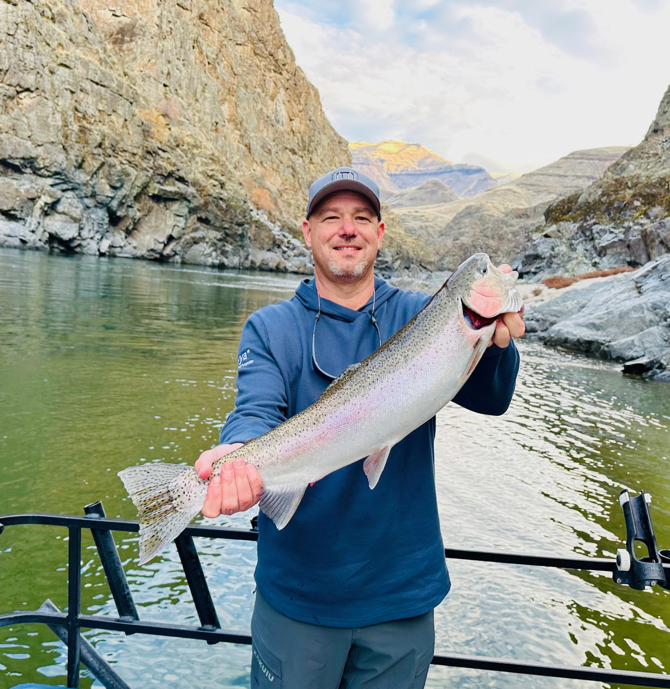
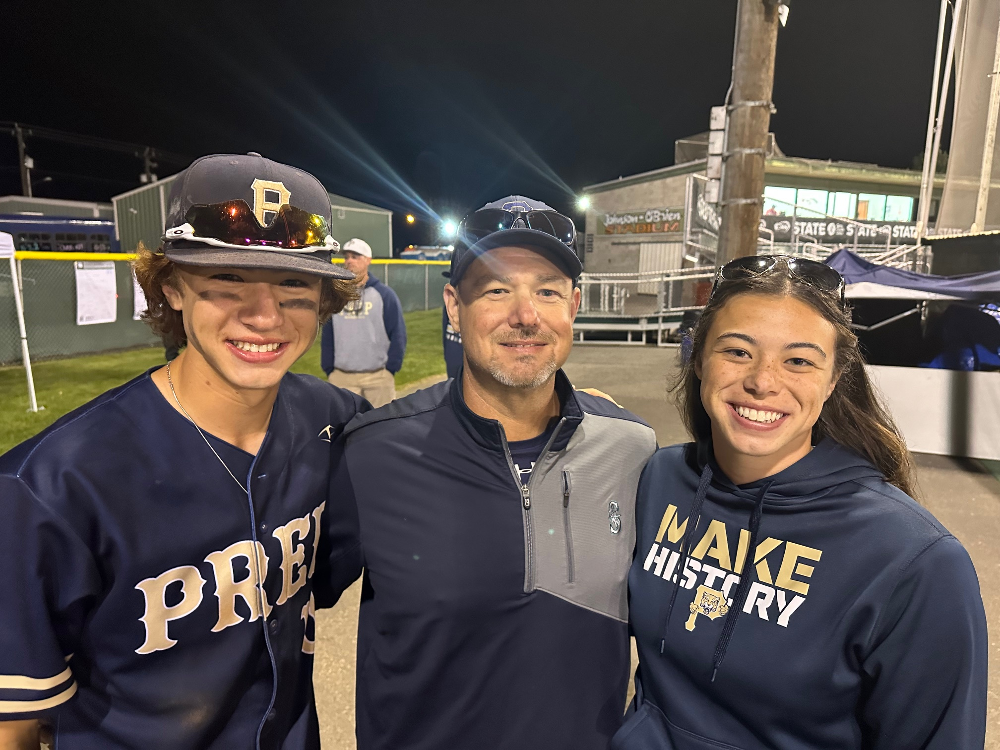

Jared William Balcom was born in Pasco, Washington on August 1st, 1973. He grew up in a farm family, with Jared being the 4th generation of a family-owned potato farm, Balcom & Moe Inc., located in Pasco, Washington. Jared graduated from Pasco High School(1991) and then graduated from Washington State University in Pullman, Washington in 1996.
After graduating, Jared moved back to Pasco and started working at the family farm. He worked his way up the chain of command and took over the farm as President in 2007. He married his wife, Kellee Magnuson, in May of 2003. His daughter McKaila was born in 2005 and his son Will was born in 2007.
Throughout his career, he's had many achievements, including being named the Young Agribusiness Man of the Year in 2012 and being elected as the President of the National Potato Council in 2022. Jared still runs Balcom & Moe, which mainly grows potatoes but also has a grape and apple division, and is also a partner of B&B Potato, which specializes in fresh potatoes. To read more about Jared and Balcom & Moe Inc., click here.